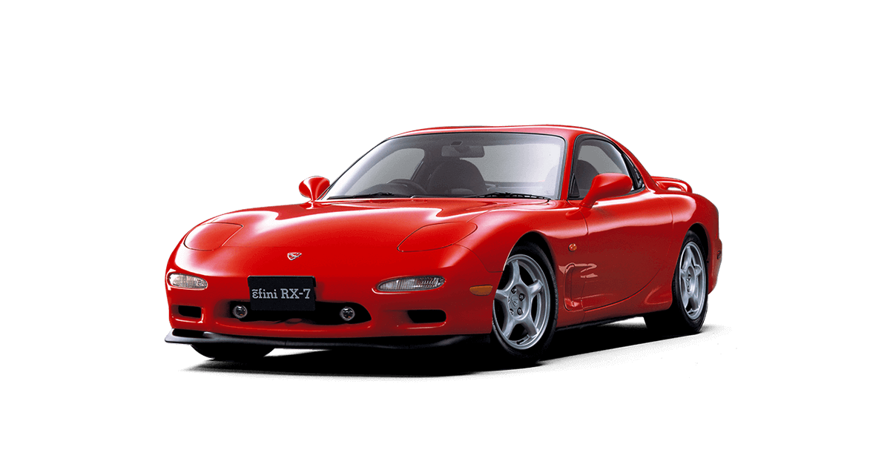

Cartunes is a website all about early 2000s
tuner culture
in the car community.
Tuner Culture
Learn all about the cars that began it all. Hatchbacks, american muscle, imports and family cars compete in a sport based in creativity, low-entry barriers, and street credit.
Graphics of Tuners
From liveries to airbrushed girls, stars and tribal tattoos, everything and anything was drawn on a car or wrenched into its dash. Learn about how Playstations, subwoofers and N64s were fit into (normally) cheap cars.
Credits
